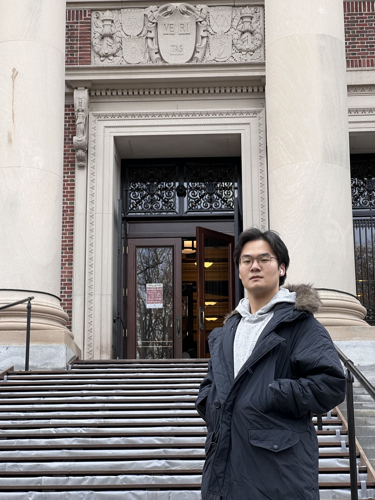
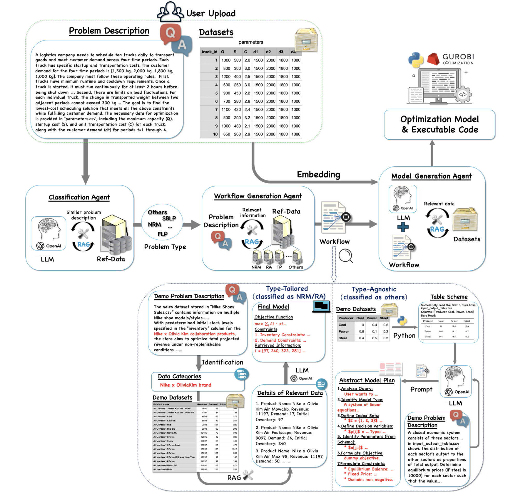

Nanyang Technological University
PhD student, CCDS-AI. Advisors: Prof. Lin William Cong and Prof. An Bo.
PhD Student · NTU CCDS-AI
I am a PhD student in CCDS-AI at Nanyang Technological University, advised by Prof. Lin William Cong and Prof. An Bo.
My current work studies how large language models can formulate optimization problems from natural language and user-provided data. I am especially interested in model generation, retrieval, solver-ready code, and evaluation for operations research tasks.

Main Project
A Lightweight Multi-Agent LLM Framework for Large-Scale Automated Optimization Modeling
LEAN-LLM-OPT is a multi-agent framework for turning optimization problem descriptions and tabular data into mathematical models, LP files, and executable Gurobi code.
The system first classifies the problem type, retrieves similar examples and relevant user data, builds a workflow, and then generates the final model and code. The framework is designed for classical operations research settings such as network flow, resource allocation, transportation, and knapsack-style problems.

Research
Background
PhD student, CCDS-AI. Advisors: Prof. Lin William Cong and Prof. An Bo.
Research Assistant, Industrial Systems Engineering and Management. Advisor: Prof. Qin Hanzhang.
Master's study in Industrial Systems Engineering and Management.
Bachelor's study in Science and Technology of Human Settlements. GPA 3.65/4.0, rank 2/22.
Exchange study in urban planning and environmental data analysis.
Awards
National University Student Social Practice and Science Contest on Energy Saving and Emission Reduction.
Three Undergraduate Innovation and Entrepreneurship projects, including chemistry education, desert management, and underwater energy harvesting.
Environmental energy device for deep-ocean energy harvesting using piezoelectric and thermoelectric components.
Email: lu012933@126.com